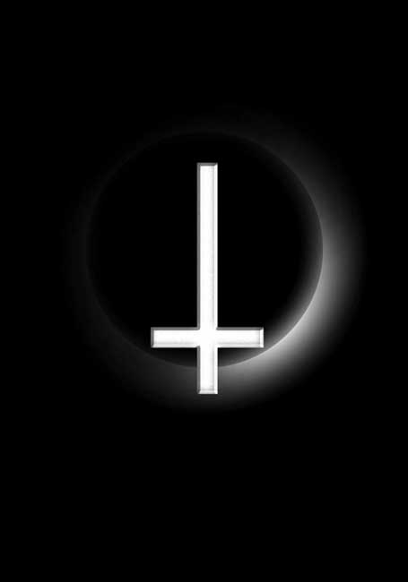
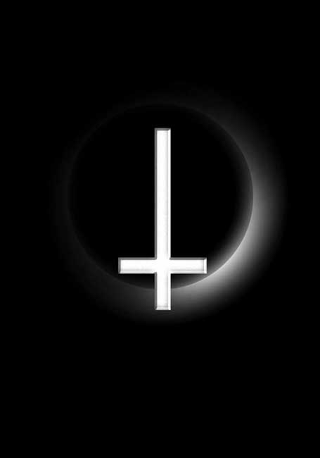

Примечание: иллюстрации взяты из предварительных материалов редакции и отличаются от опубликованных в бумажном журнале.
 |

Примечание: иллюстрации взяты из предварительных материалов редакции и отличаются от опубликованных в бумажном журнале.
|
январь 2004 |